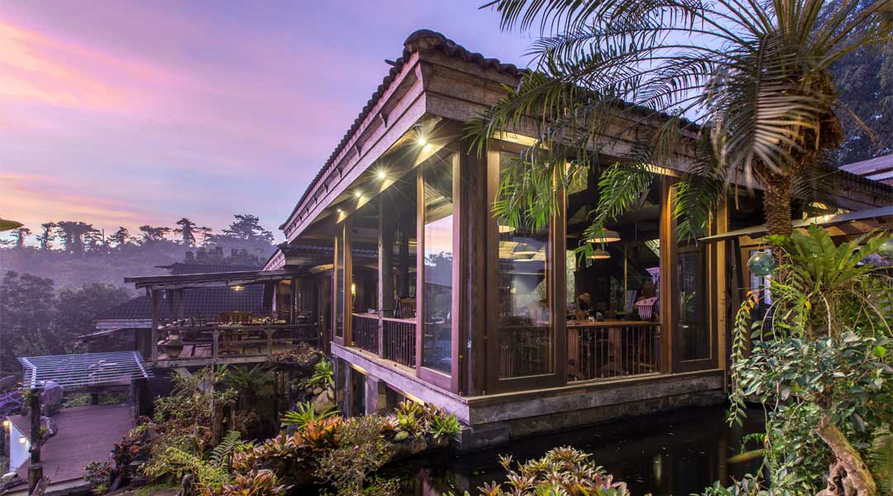
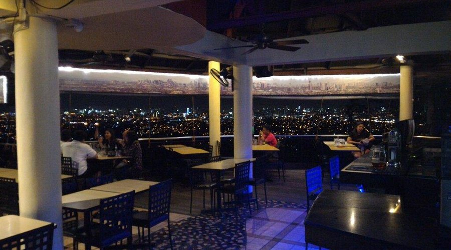
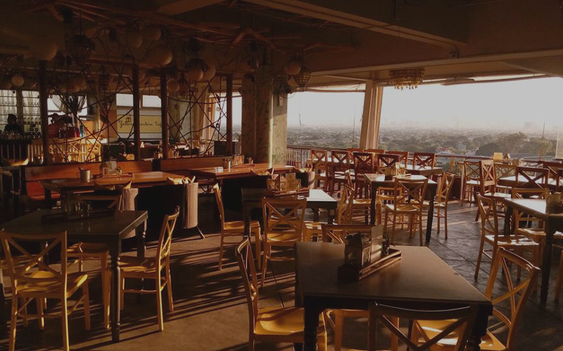
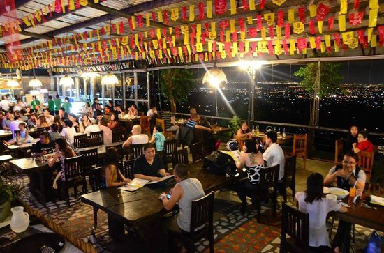
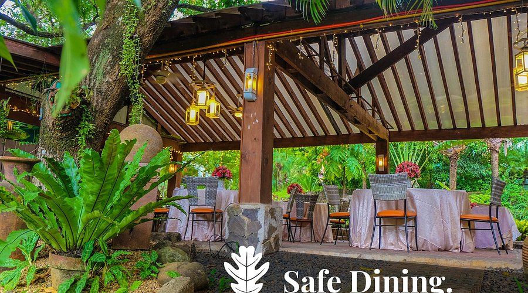
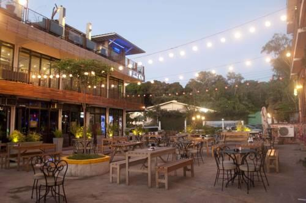

Tahanan Bistro
An upscale, reservations-only dining experience set in a beautiful teak wood house featuring curated Filipino set menus.

Padi's Point Antipolo
The classic nightlife staple where groups gather for towers of drinks, live bands, and a 180-degree view of the city.

Yellow Lantern Cafe
A cozy, warmly lit restaurant on the Sumulong Highway famous for its Paella, cocktails, and relaxing evening ambiance.

Cloud 9 Restobar
After crossing the hanging bridge at night, settle down with local beers and sizzling sisig under the starry sky.

Tipulo Modern Filipino
An open-air restaurant tucked inside an events place, offering elevated Filipino comfort food perfect for family dinners.

Cafe Lupe
A vibrant Mexican-Filipino fusion restaurant and bar offering excellent margaritas, live music, and overlooking views.